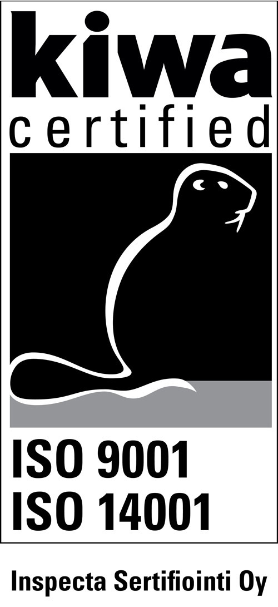
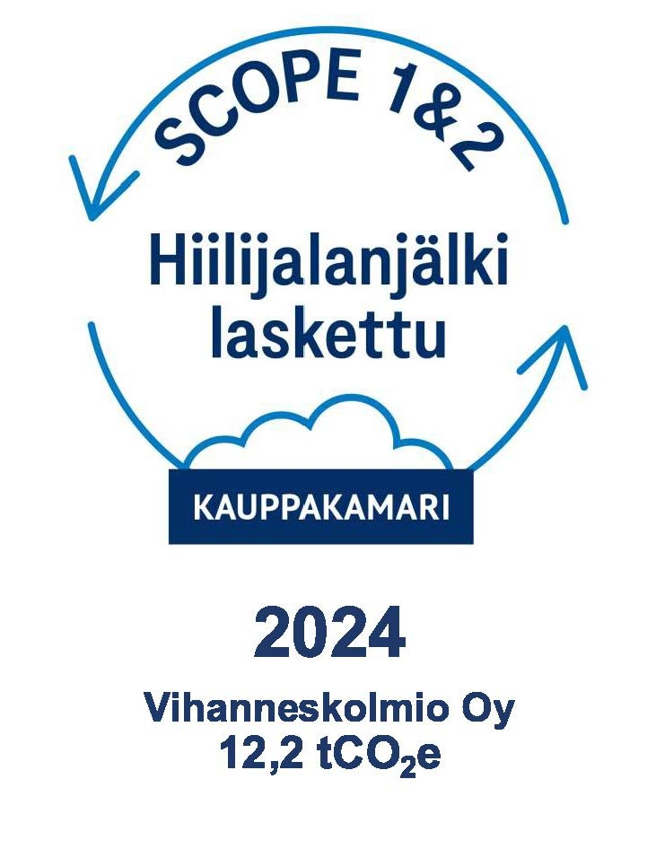
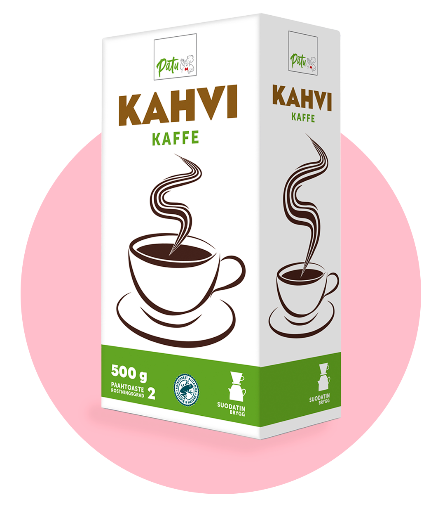
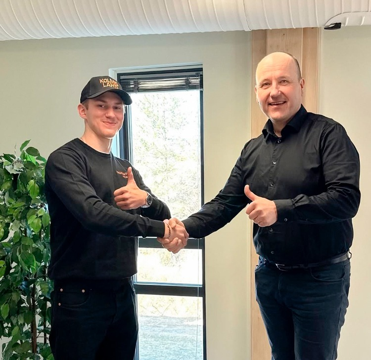

Meille Palvelutukku Kolmiossa on tärkeää olla edelläkävijänä tekemässä vastuullisia valintoja. Pyrimme aktiivisesti edistämään vastuullista liiketoimintaa eri näkökulmista.
Ympäristösertifikaatti
Palvelutukku Kolmiolla sekä PATU-ketjulla on ISO14001 standardin mukainen ympäristöohjelma.
ISO 14001 -standardi määrittelee prosesseja ja menetelmiä, joiden avulla voimme kokonaisvaltaisesti ja tavoitteellisesti parantaa ympäristöasioidemme hallintaa ja edistää kestävää kehitystä. Meillä ajatellaan, että ympäristön suojelu ja energian säästö eivät tarkoita lisäkustannuksia, vaan näillä toimilla voidaan aidosti tehostaa toimintaa ja saada vaikuttavia tuloksia.

Olemme mukana vuoden 2025 Keskuskauppakamarin järjestämässä Ilmasto-ohjelmassa ja laskeneet hiilijalanjälkemme. Tavoitteemme on toimia hiilineutraalisti ja kaikki meillä käytettävä energia tuotetaan hiilidioksidivapaasti. Teemme pitkäjänteistä työtä, jotta toimintamme kuormittaisi ympäristöä mahdollisimman vähän. Panostamme aktiivisesti myös jätteen ja hävikin määrien minimointiin. Jätteet kierrätetään tai hyödynnetään jatkojalostuksen kautta ja teemme aktiivisesti työtä ruokahävikin pienentämiseen läpi koko toimintaketjumme hankinnasta loppukäyttäjään.

Vastuullisuus liiketoiminnassa
Suomen Palvelutukkurit Oy ja siihen kuuluvat Patu-tukut tekevät hankintayhteistyötä vain sertifioitujen, tunnettujen ja luotettavien kumppaneiden kanssa. Tuoteturvallisuus on meille elinehto ja siksi myös siihen liittyvä läpinäkyvyys on meille erityisen tärkeää. Selvitämme raaka-aineiden ja pakkausmateriaalien alkuperän sekä huolehdimme niiden vastuullisuudesta.
Paikallinen liiketoiminta ja paikallisen tuotannon tukeminen ja korostaminen liiketoiminnassamme on meille tärkeä arvo, mutta sen kautta voimme myös taata asiakkaillemme laadukkaimmat ja tuoreimmat raaka-aineet turvallisesti ja ympäristön kannalta vähiten kuormittavasti. Valitsemme myös aina tuotteen sen mahdollistaessa, Patu-tuotteiden tuottajaksi tai valmistajaksi kotimaisen toimijan. Esimerkiksi Patu Korvapuusti on meille paikallisen leipomon leipomaa ja Patu Kahvi kotimaista paahtoa.
Toimitusvarmuutemme sekä asiakastyytyväisyytemme (NPS) ovat alamme huippuluokkaa.

Sosiaalinen vastuu
Meille Palvelutukku Kolmiolla sosiaalinen vastuu muodostuu edellä mainittujen asioiden lisäksi työnantajan vastuusta. Työpaikkana haluamme olla työntekijöillemme turvallinen ja tasa-arvoinen. Meille henkilöstö on tärkein voimavaramme ja haluamme panostaa henkilöstömme hyvinvointiin.
Henkilöstön hyvinvointia on meillä tukemassa esimerkiksi laaja työterveyshuolto, hierontaetu sekä liikunta- ja kulttuurietu. Pidämme myös säännöllisesti henkilöstön virkistyspäiviä.
Työturvallisuuden parantamisen puitteissa olemme osallistuneet mm. työturvallisuudella tuottavuutta ja työhyvinvointia Safe-In Log -hankkeeseen vuosina 2020–2022. Panostamme myös jatkuvasti henkilöstömme osaamisen kehittämiseen. Sen lisäksi, että osaamistamme kehittämällä pystymme palvelemaan asiakkaitamme paremmin, on se myös tärkeää henkilötasolla.

Työ on aina mielekkäämpää, kun oppii uusia asioita ja pystyy hyödyntämään niitä työssään. Olemmekin huomanneet, että henkilöstön työtyytyväisyys on kasvanut harppauksin henkilöstön osaamiseen liittyvien hankkeiden jälkeen. Työtyytyväisyytemme onkin erinomaista tasoa.
Haluaisitko tulla osaksi työyhteisöämme?
Työllistämme esimerkiksi varastossa logistiikkatyöntekijöitä keräilemään asiakastilauksia ja toimistossa asiakaspalveluhenkilöitä vastaanottamaan asiakkaidemme tilauksia tai tekemään tuotehankintoja. Mikäli kiinnostuit mahdollisista avoimista työpaikoista, ole meihin yhteydessä ja lähetä hakemuksesi sähköpostitse.
rekrytointi@palvelutukkukolmio.fi